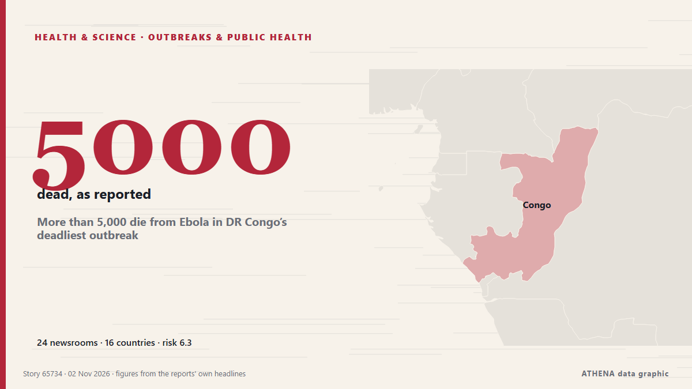

More than 5,000 die from Ebola in DR Congo’s deadliest outbreak

Government data shows that more than 10,000 people have contracted the rare virus. من BBC News
نشرته بشكل مستقل 24 مصدرًا في 16 دولة منذ 30 أكتوبر، وأول من نشره IOL؛ والتغطية تتراجع. يقدّر ATHENA الخطر بأنه مرتفع (6.3/10)، ويعود ذلك أساسًا إلى خطورة الضرر الموصوف ونطاقه الجغرافي والقطاعي. الثقة 93٪ (مرتفعة)، وعدد المصادر المستقلة المؤكِّدة: 24، بمتوسط موثوقية للمصادر يبلغ 77٪. وسائل الإعلام حسب البلد: المملكة المتحدة (3), غانا (3), البرازيل (2). التغطية: من 30 أكتوبر إلى 2 نوفمبر، 65 ساعة.
لماذا يهم: قد تغيّر التطورات الصحية والعلمية مخاطر الصحة العامة وأولويات البحث والتنظيم.
ما الذي تغيّر: 3 تقارير جديدة من 2 غرف أخبار خلال 24 ساعة حتى 2 نوفمبر.
العنوان الأول: Ebola Is Outrunning Congo’s Trust Faster Than Its Health System
تُعرض العناوين بالإنجليزية كما نُشرت.
نظرة سريعة
اختير وقُيِّم وكُتب وفق منهجية ATHENA المنشورة. لا يتدخل أي محرر في الأحداث بعينها. كيف يُنتَج ›
| 30 Oct 09:20 UTC | 2 |
|---|---|
| 30 Oct 12:20 UTC | 1 |
| 30 Oct 15:20 UTC | 0 |
| 30 Oct 18:20 UTC | 1 |
| 30 Oct 21:20 UTC | 5 |
| 31 Oct 00:20 UTC | 1 |
| 31 Oct 03:20 UTC | 1 |
| 31 Oct 06:20 UTC | 5 |
| 31 Oct 09:20 UTC | 2 |
| 31 Oct 12:20 UTC | 4 |
| 31 Oct 15:20 UTC | 0 |
| 31 Oct 18:20 UTC | 1 |
| 31 Oct 21:20 UTC | 0 |
| 01 Nov 00:20 UTC | 0 |
| 01 Nov 03:20 UTC | 1 |
| 01 Nov 06:20 UTC | 1 |
| 01 Nov 09:20 UTC | 0 |
| 01 Nov 12:20 UTC | 0 |
| 01 Nov 15:20 UTC | 0 |
| 01 Nov 18:20 UTC | 0 |
| 01 Nov 21:20 UTC | 0 |
| 02 Nov 00:20 UTC | 1 |
| 30 Oct 10:03 UTC | 3.9 |
|---|---|
| 30 Oct 22:26 UTC | 4.7 |
| 31 Oct 00:09 UTC | 5.9 |
| 02 Nov 02:12 UTC | 6.3 |
لماذا هذه الأرقام
الأهمية
الخطر
الثقة
التغطية — من نشر الخبر ومتى
العنوان كما نُشر · يفتح الأصل- IOL · جنوب أفريقياEbola Is Outrunning Congo’s Trust Faster Than Its Health System
- The Rio Times · البرازيلBurundi Level 3 Advice for US Travelers
- KT Press · روانداTwo DR Congo Army Generals, Over 600 Soldiers Defect to Kabila-Led Rebels
- The Rio Times · البرازيلEbola in Congo Tops 10,000 Cases
- Arab News · المملكة العربية السعوديةCongo Ebola outbreak kills more than 5,000
- Sky News (World) · المملكة المتحدةEbola outbreak kills more than 5,000 people in Democratic Republic of Congo
- The New Arab · INTCongo Ebola outbreak kills more than 5,000
- Free Malaysia Today · ماليزياDR Congo Ebola outbreak death toll passes 5,000
- Free Malaysia Today · ماليزياDR Congo Ebola outbreak death toll passes 5,000
- Al Jazeera English · قطرEbola death toll in DR Congo passes 5,000
- Khaama Press · أفغانستانEbola Death Toll in DR Congo Surpasses 5,000 as Outbreak Spreads Across Africa
- TASS (English) · روسياEbola death toll in DR Congo exceeds 5,000 — Health Ministry
- WHO news · سويسراEnd in sight, but flare-ups likely in the Ebola outbreak in the Democratic Republic of the Congo
- WHO news · سويسراDead and injured following attacks on Ebola responders in the Democratic Republic of the Congo
- Stuff · نيوزيلنداCongo's Ebola deaths top 5,000 as fear of continent-wide spread mounts
- Asharq Al-Awsat (English) · المملكة العربية السعوديةCongo’s Ebola Deaths Top 5,000 as Fear of Continent-Wide Spread Mounts
- Arab Times · الكويتCongo's Ebola deaths top 5,000 as fear of continent-wide spread mounts
- Medical Xpress · المملكة المتحدةCongo's Ebola deaths top 5,000 as fear of continent-wide spread mounts
- Anadolu Agency (English) · تركياDeath toll from Ebola outbreak in DR Congo surpasses 5,000
- TRT World · تركياDRC Ebola death toll tops 5,000 in country’s worst outbreak
- BBC News · المملكة المتحدةMore than 5,000 die from Ebola in DR Congo's deadliest outbreak
- Courthouse News · الولايات المتحدةCongo’s Ebola deaths top 5,000 as fear of continent-wide spread mounts
- GBC Ghana Online · غاناMore than 5,000 die from Ebola in DR Congo’s deadliest outbreak
- CGTN (World) · الصينDR Congo Ebola death toll surpasses 5,000 as outbreak spreads
- MyJoyOnline · غاناMore than 5,000 die from Ebola in DR Congo’s deadliest outbreak
- MyJoyOnline · غاناCongo Ebola outbreak kills more than 5,000